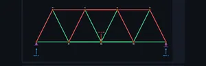

Truss Analysis — Method of Joints
Member Forces • Tension & Compression • Reactions • Equilibrium — Simulate • Explore • Practice • Quiz
Display Controls
1 Overview
The Truss Analysis Simulator performs real-time structural analysis of 2D pin-jointed trusses using the method of joints. It supports three classic truss configurations — Warren, Pratt, and Howe — and calculates all member forces (tension, compression, or zero-force), support reactions, and determinacy. Members are colour-coded: green for tension, red for compression, and grey for zero-force members.
A truss is a structure of slender members connected at pin joints, where each member carries only axial forces. This simulator helps you understand how external loads are distributed through the truss members and how changing the truss type, geometry, or loading position affects the internal force distribution.
2 Setting Up the Load Case

The simulator opens in Simulate mode with a 4-panel Warren truss under no applied load. The canvas shows the truss geometry with joint numbers, support symbols (pin at left, roller at right), and member colours. Below the canvas are controls for truss type, number of panels, dimensions, and load placement.
Click a Preset (Central Load, Uniform Loading, Asymmetric Load, or Multiple Loads) to immediately see the truss respond with colour-coded members and updated readouts. Toggle Show Force Values to display numeric force magnitudes on each member.
3 Building the Diagrams
Select a Truss Type: Warren (diagonal members alternate direction, no verticals), Pratt (diagonals slope toward centre — diagonals in tension under gravity), or Howe (diagonals slope away from centre — diagonals in compression). Each type distributes forces differently.
Adjust the Panels slider (2–6) to change the number of bays. Use Panel Width and Truss Height to modify geometry, and Load Magnitude to set the force in kN. The Load at Joint slider positions the vertical load at a specific bottom-chord joint.
The readout cards display: Reaction A (vertical), Reaction B (vertical), Total Load, Max Tension (kN), Max Compression (kN), number of Members, number of Joints, and Determinacy (m + r − 2j, where 0 = statically determinate). The method of joints solves ΣFx = 0 and ΣFy = 0 at each joint sequentially.
4 Reading the Theory
Explore mode covers 12 concepts in three categories: Truss Basics (what is a truss, types, determinacy, stability), Analysis Methods (method of joints step-by-step, method of sections, zero-force member rules), and Forces & Members (tension vs compression, force distribution patterns, influence of geometry).
Each concept includes an animated illustration on the canvas and a text explanation. Pay special attention to the two zero-force member identification rules — they can save significant calculation time on exams.
5 Try a Problem
Practice mode generates random truss problems asking you to find support reactions, specific member forces, or identify zero-force members. Enter your numeric answer and click Check for instant feedback and a running score. Step-by-step solutions guide you through the method of joints approach.
Quiz mode presents 5 randomised questions covering reaction calculations, member force identification (tension/compression), zero-force member rules, and determinacy. Your final score is displayed with a detailed review.
6 Design Notes
- Always start the method of joints at a joint with at most two unknowns — typically a support joint after computing reactions.
- Use the zero-force member rules first to eliminate unknowns: at an unloaded joint with only two non-collinear members, both are zero-force.
- A truss is statically determinate when m + r = 2j. If m + r > 2j, it is statically indeterminate and requires additional methods.
- In a Pratt truss under downward loading, diagonals are typically in tension — this is structurally efficient because slender members handle tension better than compression.
- Toggle Show Force Values on and compare the displayed values with your hand calculations to verify your work.
- Try the Uniform Loading preset, then switch between Warren, Pratt, and Howe to see how the same external loads produce different internal force distributions.
- Remember that positive force values indicate tension (pulling the joint) and negative values indicate compression (pushing the joint).
Truss Analysis — Method of Joints and Sections

Truss analysis is a fundamental topic in structural mechanics. A truss is a structure composed of slender members connected at joints (nodes), designed to carry loads efficiently through axial forces only — each member is either in tension (being pulled apart) or compression (being pushed together). Understanding truss behaviour is essential for designing bridges, roof structures, transmission towers, and crane booms.
The three most common truss types are the Warren truss (diagonal members alternate in direction, forming a W-pattern), the Pratt truss (verticals and diagonals sloping toward the centre), and the Howe truss (verticals and diagonals sloping away from the centre). Each type distributes forces differently through its members.
How Truss Analysis Works
The method of joints analyses equilibrium at each joint of the truss. Since all forces at a joint are concurrent (meeting at a single point), only two equilibrium equations apply: ΣFx = 0 and ΣFy = 0. Starting from a joint with at most two unknowns, the analyst systematically solves for member forces throughout the entire truss. A positive result indicates tension, while a negative result indicates compression.
The method of sections is useful when only a few member forces are needed. A virtual cut is made through the truss, dividing it into two parts, and equilibrium of one part is analysed using three equations: ΣFx = 0, ΣFy = 0, and ΣM = 0.
Zero-Force Members and Determinacy
Zero-force members carry no load under certain conditions: (1) at a joint with only two non-collinear members and no external load, both members are zero-force; (2) at a joint with three members where two are collinear, the third is a zero-force member (if no external load is applied). A truss is statically determinate when m + r = 2j, where m = number of members, r = number of reactions, and j = number of joints.
How to Use This Simulator
In Simulate mode, select a truss type (Warren, Pratt, or Howe), adjust the number of panels, dimensions, and load position using the sliders. The canvas displays the truss with colour-coded members: green for tension, red for compression, and grey for zero-force. Use presets for common loading cases. Switch to Explore mode to study 12 concepts across Truss Basics, Analysis Methods, and Forces & Members with worked examples. Practice mode generates random truss problems, and Quiz tests your knowledge with 5 randomised questions.
Spot the Zero-Force Members First — A Shortcut Worth Memorising
Most students start a truss problem by picking a joint and writing equations. There is a much faster opening move: look at the whole truss for zero-force members and cross them off before you do any algebra.
Two patterns to look for:
- Two-member, no-load joint. If a joint has exactly two members coming into it and no external load is applied there, both members carry zero force. The proof is one sentence: equilibrium requires both members to balance, but with only two non-collinear members and no load, the only solution is F₁ = F₂ = 0.
- Three-member, two-collinear-no-load joint. If a joint has three members, two of them collinear, and no external load, the third (non-collinear) member is zero-force. The collinear pair carries the load straight through; nothing is left to balance the third.
A typical 8-panel Pratt truss might have six zero-force members. Identifying them first cuts your algebra in half. In the simulator, zero-force members appear in grey — the visual reinforces the habit. After a few problems students learn to spot them by eye in about ten seconds.
Method of Joints Worked End-to-End — A Simple 4-Joint Truss
Take a simple triangulated truss: a horizontal bottom chord 8 m long between joints A and B, with a peak joint C at the centre 3 m above. Pin support at A, roller at B. A vertical load of 12 kN is applied downward at C. Find the forces in all three members.
| Step | Equation | Working | Result |
|---|---|---|---|
| Take moments about A to find RB | ΣMA = 0 | 12×4 = RB×8 | RB = 6 kN ↑ |
| Vertical equilibrium for RA,y | ΣFy = 0 | RA,y + 6 − 12 = 0 | RA,y = 6 kN ↑ |
| Horizontal equilibrium for RA,x | ΣFx = 0 | no horizontal loads | RA,x = 0 |
| Angle of AC from horizontal | θ = arctan(3/4) | — | 36.87° |
| Joint A: sum vertical (FAC sinθ + 6 = 0) | FAC·sin36.87° = −6 | — | FAC = −10 kN (10 kN compression) |
| Joint A: sum horizontal (FAB + FAC·cosθ = 0) | FAB + (−10)·cos36.87° = 0 | FAB = 8 | FAB = 8 kN tension |
| Joint B (symmetric) | (same logic, mirrored) | — | FBC = 10 kN compression |
Sanity check at joint C: the two top chord members each carry 10 kN compression at 36.87°. Vertical components: 2×10×sin36.87° = 12 kN, which equals the applied load. Horizontal components: 10·cos36.87° in each direction, equal and opposite, cancel. The system balances.
Method of Sections — When the Method of Joints Is Too Slow
If you only need the force in one member of a 20-panel truss, working through joints from one end is wasteful. The method of sections cuts a single line through three (or sometimes more) members and uses moment equilibrium of the cut-off portion to solve directly.
The rule of thumb: section through three members at most, because you only have three equilibrium equations (ΣFx, ΣFy, ΣM) in 2D. Choose your moment centre at the intersection of two of the unknown members — this eliminates them and leaves a single-unknown equation in the third. The classic example is the lower-chord force in a Pratt truss: section vertically through one panel, take moments about the upper joint, and the lower-chord force falls out in one line. The simulator’s section overlay tool draws the cut line on the canvas so you can see which members get sectioned before you commit.
The Bridge-Truss Family Tree — Why Engineers Picked These Shapes
| Truss type | Pattern | Best for | Why |
|---|---|---|---|
| Pratt | Diagonals slope DOWN toward centre, verticals carry compression | Steel railway / highway bridges | Long diagonals in tension; short verticals in compression — matches steel’s natural strengths |
| Howe | Diagonals slope UP toward centre, verticals in tension | Timber bridges (19th century North America) | Diagonals in compression suit timber (good in compression, weaker in tension); verticals were iron tie rods |
| Warren | Alternating diagonals, no verticals | Footbridges, light roof trusses, aircraft hangar roofs | Fewest members — light, efficient, and clean visually |
| K-truss | K-shaped sub-panels | Very tall bridges (Forth Bridge, Quebec Bridge) | Distributes compression among shorter sub-members, reducing buckling length |
| Bowstring | Curved top chord, straight bottom chord | Roof trusses, arena spans | Top chord follows funicular line, near-uniform compression all along |
| Fink | Triangulated W-pattern in roof trusses | Residential and light commercial roofs | Short top-chord segments, easy to assemble from standard timber lengths |
The choice between Pratt and Howe was historically a material decision — iron-and-steel age picked Pratt, timber-and-iron-rod age picked Howe. Today, with all-steel construction dominating, Pratt and Warren cover most highway bridges and Fink covers most residential roofs. The simulator lets you switch between Pratt, Howe and Warren on the same span to see how member forces redistribute.
Books and References for Going Deeper
- Hibbeler, R. C. — Structural Analysis, 10th ed., Pearson, Chapters 3 (Analysis of Statically Determinate Trusses) and 4 (Influence Lines).
- Norris, C. H., Wilbur, J. B. & Utku, S. — Elementary Structural Analysis, 4th ed., McGraw-Hill. The classical treatment, with excellent worked examples.
- AISC Steel Construction Manual, 15th ed. — for member selection (W-sections, HSS) once the analysis gives you the forces.
- Eurocode 3 (EN 1993-1-1) — the European steel design code; truss connections are covered in EN 1993-1-8.
- IS 800:2007 — the Indian Standard for steel construction, widely cited in technical-education syllabi.
Explore Related Simulators
If you found this Truss Analysis simulator helpful, explore our Beam Bending simulator, Mohr’s Circle simulator, Stress–Strain Curve simulator, and Free Body Diagram & Force Resolver for more hands-on practice.